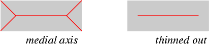

Last modified: October 27, 2015
In module gamera.toolkits.musicstaves.musicstaves_skeleton
Implements a skeleton based staff line removal.
The algorithm consists of the following steps:
References:
Skeletonization is a commonly used technique in optical music recognition, though it is usually applied after staff line removal. As a proof of concept, D. Nehab detected staff lines in a vectorized skeleton, see Diego Nehab: Staff Line Detection by Skewed Projection. http://www.cs.princeton.edu/~diego/academic/phd/ (2003)
| Author: | Christoph Dalitz |
|---|
In addition to the arguments of the constructor of the MusicStaves base class, the constructor optionally allows to pass a precomputed skeleton image. This can be useful for testing purposes, because skeleton computation can be time consuming.
Signature:
__init__(image, staffline_height=0, staffspace_height=0, skelimage=None, medialaxis=False)
with
- sekelimage:
- a onebit image of the skeleton. When the skeleton is a medial axis transform, set the following parameter to True.
- medialaxis:
Depending on the skeleton generating algorithm, the skeleton can be a medial axis transform or a thinned out image.

As each skeleton type requires a different preprocessing in remove_staves, you must provide the type as a parameter. When you do not provide a precomputed skeleton and leave the skeleton computation to remove_staves, set medialaxis=False, because a thinned out skeleton is significantly faster to compute than a medial axis transform.
Detects and removes staff lines from a music/tablature image. A skeleton of the found staff lines is stored as a nested list of StafflineSkeleton in the property linelist, where each sublist represents a staff system (as in the StaffFinder base class).
Signature:
remove_staves(crossing_symbols='all', num_lines=0, debug=0, false_positive_criterion='quad_angle', horizontal_extrapolation='segment_angle')
with
- crossing_symbols:
- This algorithm only supports the value 'all'.
- num_lines:
- Number of lines within one staff. A value of zero for automatic detection is supported, but if you give the actual number, staff line detection will improve.
- debug:
- Set the debug level verbosity. For debug >= 1, tracing information is printed to stdout, for debug >= 2 images with prefix skeldebug are written into the current working directory.
- false_positive_criterion
- Criterion to be used to identify false positives. Supports the values 'none', 'lin_meets', 'lin_angle' and 'quad_angle'.
- horizontal_extrapolation
- In which direction the extrapolation for horizontal linking of segments shall be done. Possible values are 'segment_angle' (angle of least square line through the segment) or 'skew_angle' (global document skew angle).
Returns the y-positions of all staff lines at a given x-position. Can only be called after remove_staves.
Signature:
get_staffpos(x=0)
with
- x:
- This parameter has no effect, because the staffline is assumed to be horizontal.
The return value is a list of StaffObj.
Note that a more accurate way to obtain the staff lines for this class is by accessing self.linelist, because this does not just yield the average y-position, but the full staff line skeletons. Example:
ms = MusicStaves_skeleton(image)
ms.remove_staves()
sf = StaffFinder(image, ms.staffline_height, ms.staffspace_height)
sf.linelist = ms.linelist
rgb = sf.show_result()
rgb.save_PNG("foundstaves.png")